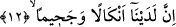

son tefsir dil bilgisi kuralları açısından daha uygundur. Çünkü mef’ûlü meah olarak
mansub olması, fiil lazım/geçişsiz olduğunda söz konusudur. Oysa burada fiil
müteaddidir.
“Üli’n-ni’me” ifâdesine gelince, bunun anlamı nimetlenme içerisinde yüzenler
demektir. Bu, “mükezzibîn/yalanlayıcılar” ifâdesinin sıfatıdır. Yalanlayıcılar ise
Kureyş’in ileri gelenleridir. Onlar Kureyş toplumunda lüks ve refah içinde yaşayan bir
kesimdiler. Özellikle Muğîre oğulları böyleydi.
“Na’met”, huzûr bulmak, refaha kavuşmak, “ni’met” bolluk ve nimet içerisinde olmak
anlamınadır. “Nu’met” ise sevinç demektir. “Tena’um” içerisinde yumuşaklık ve hoşluk
olan yiyecek ve giyecek maddelerini kullanmak demektir.
Bu son âyet-i kerîme işâret ediyor ki kınamaya konu olan, nimet ve rızkın bizâtihi
kendisi değildir. Tam tersine asıl kınanan şey şükretmeden o nimetten istifâde etmektir.
Peygamber (s.a.) Efendimiz Hz. Muâz (r.a.)’ı Yemen’e vâli olarak gönderirken
kendisine; “Nimetler içinde yüzmekten sakın. Çünkü Allah’ın kulları nimetten istifâde
edemiyorlar” [161] demiştir. Bu ifâde fakirleri tesellî etmektedir. Çünkü onlar cennete
zenginlerden beşyüz yıl önce gireceklerdir.
“Ve onlara biraz mühlet ver.” Mühlet kelimesinin kökü olan “mehl” sükûnet ve
yavaşlık anlamınadır. “Onlara biraz mühlet ver” demek onlara biraz süre tanı acele
etme, çünkü Allah onlara âhirette azap edecektir. Zira dünya ömrü kısadır, ahiret
gelecektir ve her gelecek yakındır. Âyetin devamındaki âhiret azâbını beyân eden
ifâdeler buradaki görüşlerimizi desteklemektedir. Taberî der ki: Bu âyet-i kerîmenin
inmesiyle Bedir savaşının patlak vermesi arasında kısa bir zaman dilimi vardır. Bu
nedenle âyetin Medenî; yâni Medine’de inmiş olduğu söylenmiştir.
12. Hiç şüphesiz bizim nezdimizde (onlar için hazırlanmış) bukağılar, yakıcı bir
ateş,
“Hiç şüphesiz” âhirette bizim yanımızda âsiler için hazırlamış olduğumuz azap
âletleri ve araçları mevcuddur. “Ledeynâ” kelimesine bizim bu şekilde verdiğimiz mânâ
bâzı âlimlerin “bizim ilmimizde ve takdirimizde...” şeklinde vermiş oldukları mânâdan
daha iyidir. Çünkü bu arada âsiler tehdid edilmektedir. Şu hâlde azap araçlarının bilfiil
mevcûd bulunuşu tesir bakımından daha etkilidir. Öte yandan bu âletler işlenen çirkin
amellerin sûretleridir. Kuşkusuz Peygamber (s.a.)’in döneminde yaşayan kâfirler bu
âletleri işledikleri kötü amellerle birlikte önden gönderdiler.
Âyetteki “enkâl” kelimesi “nikl” kelimesinin çoğulu olup anlamı -kaçacaklarından
korku duyulduğu için değil- kendilerine azap ve hakâret olsun diye suçluların
ayaklarından bağlandığı ağır bukağılardır. Bu cümle yukarda verilen emrin sebebini